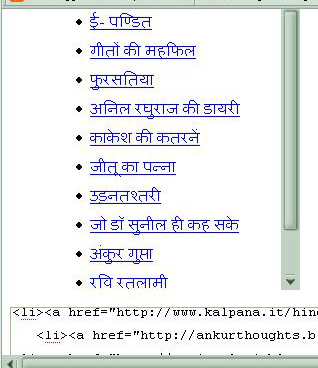

मैने बहुत दिनों तक इसका उपाय खोजा कि सारे चिट्ठे भी रहें और जगह भी कम घेरे। मुझे आखिरकार कल इसका इलाज मिल ही गया।
कल पूरा दिन इसके पीछे बर्बाद करने के बाद मैने पहले रेडियोनामा पर इसका प्रयोग किया और सफल रहा तो मन हुआ कि यह प्रयोग आप सबको बताना चाहिये।
तो प्रस्तुत है आप सबके लिये यह काम का और मजेदार तरीका जिससे आपके साईडबार में दिये ब्लॉगरोल के लिंक उपर या नीचे घूमने लगेगा और बहुत ही कम जगह रोकेगा। जिससे आप और भी ज्यादा लिंक, कोड या फोटो लगा सकते हैं।
सबसे पहले अपने ब्लॉगर में जाकर Dashboard- Layout - Add and Arrange Page Elements में जाकर एक HTML/Java Script वाली खिड़की खोल लेवें। और नीचे बताये गये कोड को कॉपी कर लेवें और उस खिड़की में पेस्ट कर लेवें।
<div style="width:250px; height:300px; overflow:auto; white-space:normal;">
<div class="widget-content">
<marquee direction="up" onmouseover="this.stop()" width="100%" onmouseout="this.start()" scrollamount="2" align="center">
<ul>
<li><a href="http://www.epandit.blogspot.com/" target="_blank">ई- पण्डित</a></li>
<li><a href="http://mahaphil.blogspot.com" target="_new">गीतों की महफिल</a></li>
<li><a href="http://hindini.com/fursatiya/" target="_new">फुरसतिया</a></li>
<li><a href="http://diaryofanindian.blogspot.com" target="_new">अनिल रघुराज की डायरी</a></li>
<li><a href="http://kakesh.com" target="_new">काकेश की कतरनें</a></li>
<li><a href="http://jitu.info/merapanna" target="_new">जीतू का पन्ना</a></li>
<li><a href="http://udantashtari.blogspot.com" target="_new">उड़नतश्तरी</a></li>
<li><a href="http://www.kalpana.it/hindi/blog" target="_new">जो डॉ सुनील ही कह सके</a></li>
<li><a href="http://ankurthoughts.blogspot.com//" target="_blank">अंकुर गुप्ता</a></li>
<li><a href="http://raviratlami.blogspot.com/" target="_blank">रवि रतलामी</a></li>
<li><a href="http://takneek.wordpress.com/" target="_blank">तकनीकी चिट्ठा</a></li>
</ul>
</marquee></div>
</div>
आपके साईड बार के लिंक उपर की तरफ चल रहे हैं। आप माऊस के तीर को उसके पास लेकर जायेंगे तो वह रुक जायेगा, ताकि आप अपने पसंदीदा चिट्ठे/ लिंक पर क्लिक कर सकें।
ध्यान देने योग्य बातें:
ने जो कोड बताया जिससे कुछ हद तक बड़े ब्लॉगरोल की समस्या हल हो जाती थी। इस कोड को जोड़ने पर ब्लॉगरोल के साईड में एक स्क्रोलर आ जाता था जिसको घुमाने से ब्लॉगरोल के लिंक उपर नीचे किये जा सकते थे।
चित्र देखिये

मुझे संतोष नहीं था, मैं चाहता था ब्लॉगरोल का यह कोड फायरफोक्स में चलने के साथ साथ उनके लिंक भी नीचे से उपर या उपर से नीचे घूमते हुए होने चाहिये ताकि पाठक को (स्क्रोल) घुमाना ना पड़े।
आखिरकार थोड़ी और मेहनत करने के बाद मैने अमित जी के दिये कोड को और मेरे पिछले कोड को मिला दिया और नया कोड जो बना वह फायरफोक्स में भी बिल्कुल सही चलने लगा। नया कोड उपर बताया गया है।
यह पोस्ट लिख ही रहा था कि पिछली पोस्ट पर श्री हरिरामजी की टिप्पणी मिली कि क्या इसमें इमेज को भी इस तरह मर्क किया जा सकता है?
जी हरिरामजी बिल्कुल इसमें इमेज को भी आसानी से मर्क किया जा सकता है। आप सब की जानकारी के लिये मैने हिन्दी चिट्ठाजगत के तीनो एग्रीग्रेटर, रेडियोवाणी और मेरी गीतों की महफिल के लोगो को यहाँ घूमते हुए बताया है, जिससे बहुत सारे लोगो भी हों तो भी साईडबार ज्यादा जगह नहीं घेरेगा।
नीचे दिये गये कोड को कॉपी कर लीजिये और अपने चिट्ठे के साईडबार में एक सही जगह पेस्ट कर दीजिये। ( विधी उपर बताई है)
<div style="width:150px; height:200px; overflow:auto; white-space:normal;">
<div class="widget-content">
<marquee direction="up" onmouseover="this.stop()" width="100%" onmouseout="this.start()" scrollamount="2" align="center">
<a href="http://www.blogvani.com/logo.aspx?blog=http://radionamaa.blogspot.com/"><img alt="www.blogvani.com" style="border:0" src="http://blogvani.com/images/blogvanilink.jpg"/></a><!-- Blogvani Link Ends -->
<a href="http://www.chitthajagat.in/" title="चिट्ठाजगत"><img border="0" alt="चिट्ठाजगत" src="http://www.chitthajagat.in/chavi/chitthajagat.png" title="चिट्ठाजगत"/></a>
<a href="http://www.akshargram.com/narad" target="_blank"><img border="1" alt="NARAD:Hindi Blog Aggregator" src=" http://www.jitu.info/images/narad.jpg"/></a>
<a href="http://radiovani.blogspot.com" target="_blank"><img border="0" alt="रेडियोवाणी" src="http://i74.photobucket.com/albums/i278/nahar7772/Radiovani-1.jpg"/></a>
<a href="http://mahaphil.blogspot.com" target="_blank"><img border="0" alt="महफिल" src=" http://i142.photobucket.com/albums/r108/grjoshee/geetonkimahphil.jpg"/></a>
</marquee>
</div>
कोड यहाँ से भी कॉपी किया जा सकता है।
marquee.txt